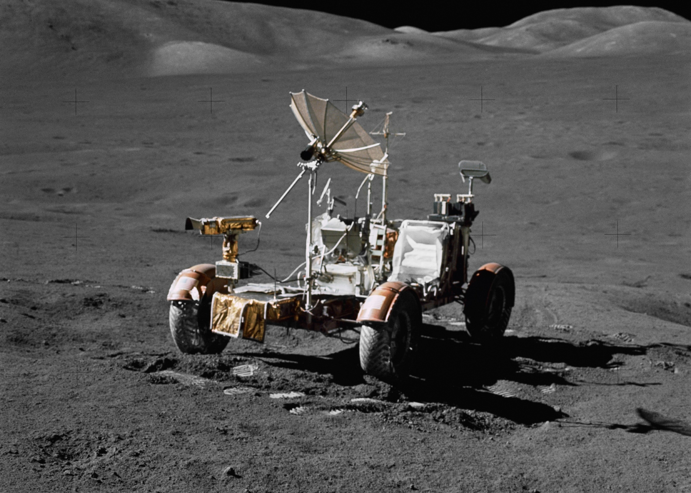
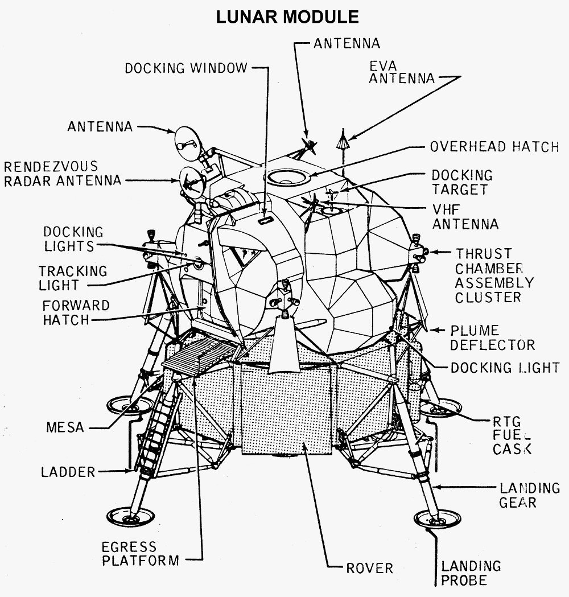

Home / The Moon / Lunar Roving Vehicles
Lunar Roving Vehicles
Three battery-powered moon buggies, parked for good.
The Moon1971-1972Hadley Rille, Descartes, Taurus-Littrow

At a glance
| Builder | Boeing, with General Motors |
|---|---|
| Length | about 3.1 m |
| Mass | about 210 kg on Earth |
| Power | two 36-volt silver-zinc batteries |
| Drive | one electric motor per wheel |
Overview
Safety shaped how the rover was used. Astronauts followed a walk-back rule: never drive farther from the lander than they could walk with their remaining oxygen if the rover failed. Because of that, the rover's range was tied to its life support, not to its batteries. Navigation used a gyroscope and distance counter, so the crew always knew the direction and distance back to the lander.
Where it began
Boeing and General Motors built the LRV after earlier missions showed walking limited explorers to a short radius around the lander. It folded like a pocket-knife into a bay on the side of the Lunar Module.
The mission
Flown on Apollo 15, 16 and 17. Astronauts unfolded it on the surface and drove kilometres from base to reach craters, rilles and mountains.
The LM separated from the Command/Service Module (CSM) at 18:13:30 UT and landed at 22:16:29 UT (6:16:29 p.m. EDT) on 30 July 1971 in the Mare Imbrium region at the foot of the Apennine mountain range at 26.13239 N latitude, 3.63330 E longitude (as determined from Lunar Reconnaissance Orbiter images, DE 421 mean Earth/polar rotation axis reference frame). Scott and Irwin made three moonwalk extra-vehicular activities (EVAs) totaling 18 hours, 35 minutes. During this time they covered 27.9 km and collected 77.31 kg of rock and soil samples. The LRV was used to explore regions within 5 km of the LM landing site. This was the first time a vehicle of this type had been used, and its performance on the lunar terrain was very successful. Two hours after landing the cabin was depressurized and Scott performed a standup EVA for 33 minutes, describing and photographing the surrounding terrain from the LM upper hatch. The first moonwalk EVA was on 31 July from 13:13:10 UT to 19:45:59 UT, during which time the LRV was unloaded, deployed, and driven. Photographs of the lunar surface were taken and geologic samples were collected from the LM site and during the three geological traverses. The traverse on the first EVA covered 10.3 km to the edge of Hadley Rille to Elbow Crater and near St. George Crater and back to the LM, where a core sample was taken from three meters below the surface. The ALSEP was deployed at the end of the traverse. On the second EVA, on 1 August from 11:48:48 UT to 19:01:02 UT, the LRV was driven on a 12.5 km traverse southeast along the base of the Appenine Mountains near Index, Arbeit, Crescent, Dune, and Spur craters and back to the ALSEP site. On the third EVA on 2 August from 08:52:14 UT to 13:42:04 UT the LRV was driven a total of 5.1 km west to Scarp Crater and northwest along the edge of Hadley Rille and back east across the mare. After the final EVA Scott performed a televised demonstration of a hammer and feather falling at the same rate in the lunar vacuum. The astronauts also left a plaque and small figure on the surface in memory of all fourteen American and Soviet space explorers who had died during the two nation's space programs. The LM lifted off the Moon on 2 August at 17:11:22 UT after 66 hours, 55 minutes on the lunar surface. After docking with the CSM (piloted by Alfred M. Worden) at 19:09:47 UT the LM was jettisoned on 3 August at 01:04:14 UT and impacted on the Moon 2 hours later (03:03:37.0 UT) at 26.36 N, 0.25 E.
How it worked
Two silver-zinc batteries drove a motor in each wheel. The wheels were woven wire mesh with titanium chevrons, since rubber tyres would not survive the temperature swing. A navigation system tracked the way home, and a TV camera sent pictures to Earth.

What it found
Roving allowed samples from varied terrain, including the orange soil at Shorty Crater, found on Apollo 17. Apollo 17's crew even repaired a broken fender with duct tape and maps.
Why it was left behind
Each LRV was designed only for the lunar stay. Returning one would have used up weight needed for samples, so after the last drive each was parked.
Where it is now
The three rovers stay where they were parked. Apollo 17's camera was left running by remote control to film the ascent stage lifting off, then went silent.
The rover was also surprisingly fast for its design. Wheels were woven from zinc-coated wire to cope with dust and temperature, and the crew steered with a T-shaped hand controller. Apollo 15 covered about 28 km, Apollo 16 about 27 km, and Apollo 17 about 36 km. An Apollo 17 fender broke and threw dust over the crew, so they repaired it with duct tape, maps and clamps.
Timeline of events
- 1969 Boeing is chosen to build the rover on a very short schedule
- 31 Jul 1971 Apollo 15 makes the first drive at Hadley Rille
- Apr 1972 Apollo 16 drives at Descartes, including John Young's famous speed run
- Dec 1972 Apollo 17 drives 35.9 km at Taurus-Littrow
- Dec 1972 The last rover is parked, with its camera filming the liftoff
1972
Apollo 17 rover parked at Taurus-Littrow.
Read more on NASAText and images adapted from NASA mission pages.